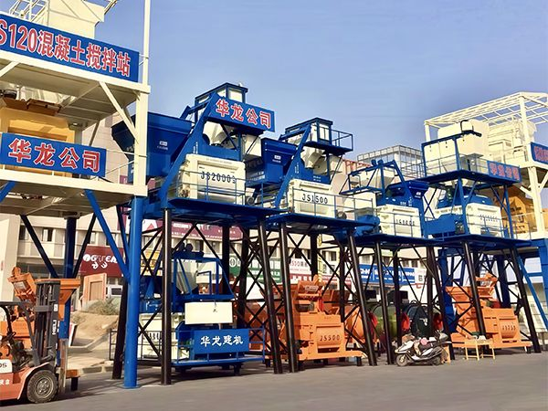
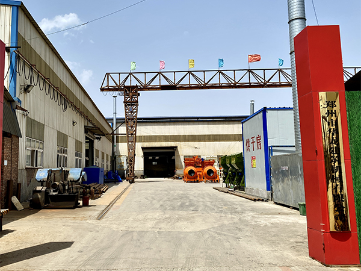
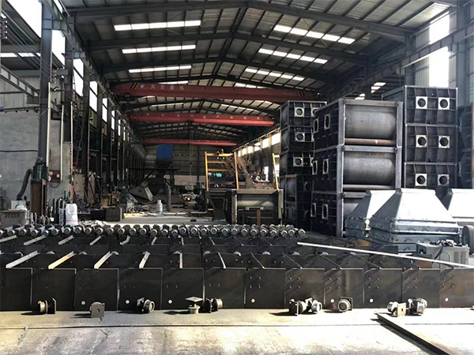
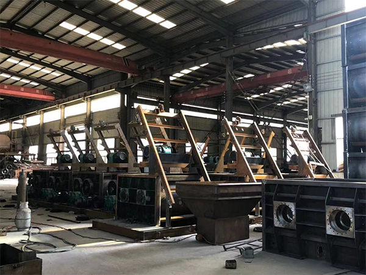
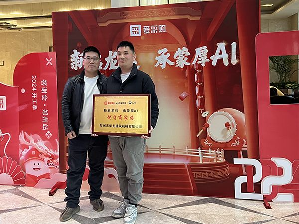

О нашей компании
Компания YudaHualong �?профессиональный производитель specializing in concrete mixing equipment R&D and production. Расположенная в Чжэнчжоу, Хэнань, Китай, компания имеет более 25 лет опыта и предоставляет комплексные услуги клиентам по всему миру. С момента основания мы придерживаемся корпоративного духа "«Стремление к качеству, создание ценности»," continuously striving for excellence and innovation. Наши продукты заслужили доверие клиентов по всему миру.
As one of China's large-scale construction machinery manufacturers, we have a 40,000 sqm production base featuring advanced technology, equipment, and processes. Мы сертифицированы по ISO 9001, гарантируя высочайшее качество. Уставный капитал увеличен до 12 млн юаней в 2025 году.



40,000 sqm
Production base with complete manufacturing facilities
25+ Years
Industry experience in concrete equipment manufacturing and export
7+ Countries
Export experience across Russia, Central Asia, Africa, Middle East
1200�?RMB
Registered capital (2025 increased from 800�?
Certifications & Qualifications
YudaHualong имеет международные сертификаты. Каждый сертификат отражает наше соответствие мировым стандартам.
CE Certification
Соответствие европейским стандартам безопасности и качества.
ISO 9001
Сертифицированная система менеджмента качества.
Utility Patents
Два патента на инновационные конструкции бетоносмесителей.
Alibaba Verified
Alibaba Gold Supplier с проверенными производственными возможностями.


Company Awards & Recognition
YudaHualong получила отраслевые награды за качество производства.



Узнайте больше о YudaHualong
Factory Tour
Посетите наше производство площадью 40 000 м².
Certifications
CE, ISO 9001, патенты �?гарантия качества.
Customer Visits
Клиенты со всего мира посещают наш завод.
Global Markets
YudaHualong экспортирует в более чем 7 стран Азии, Африки, Ближнего Востока и СНГ. Мы понимаем международные требования.
Оборудование YudaHualong поставлено в различные регионы, включая Центральную Азию, Африку, Ближний Восток и Восточную Европу, для инфраструктурных и коммерческих проектов.
Russia
Решения для холодного климата. Контракт на HZS120 в 2026 году.
Kazakhstan
Для инфраструктуры Центральной Азии. Мобильные заводы для дорожного строительства.
Nigeria
Поддержка инфраструктурных проектов в Нигерии.
Pakistan
Поставки для проектов CPEC в Пакистане.
Saudi Arabia
Оборудование для инфраструктуры Саудовской Аравии.
Kenya
Решения для развивающейся инфраструктуры Восточной Африки.